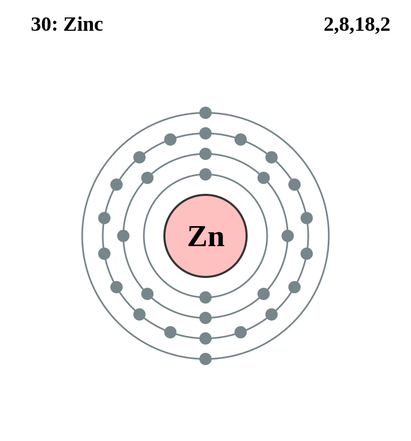

Basic Information about the element
Basic Information about the element
Name: Zinc
Symbol: Zn
Atomic Number: 30

1s2 2s2 2p6 3s2 3p6 3d10 4s2
The chemical element zinc is classed as a transition metal.
It has been known since ancient times. Its discoverer and discovery date are unknown.
| Number of Protons/Electrons: | 30 |
| Number of Neutrons: | 35 |
| Atomic Mass: | 65.39 amu |
| Melting Point: | 419.58 °C (692.73 K, 787.24396 °F) |
| Boiling Point: | 907.0 °C (1180.15 K, 1664.6 °F) |
| Classification: | Transition metal |
| Uses: | metal coating, rust protection, brass, bronze, nickel |